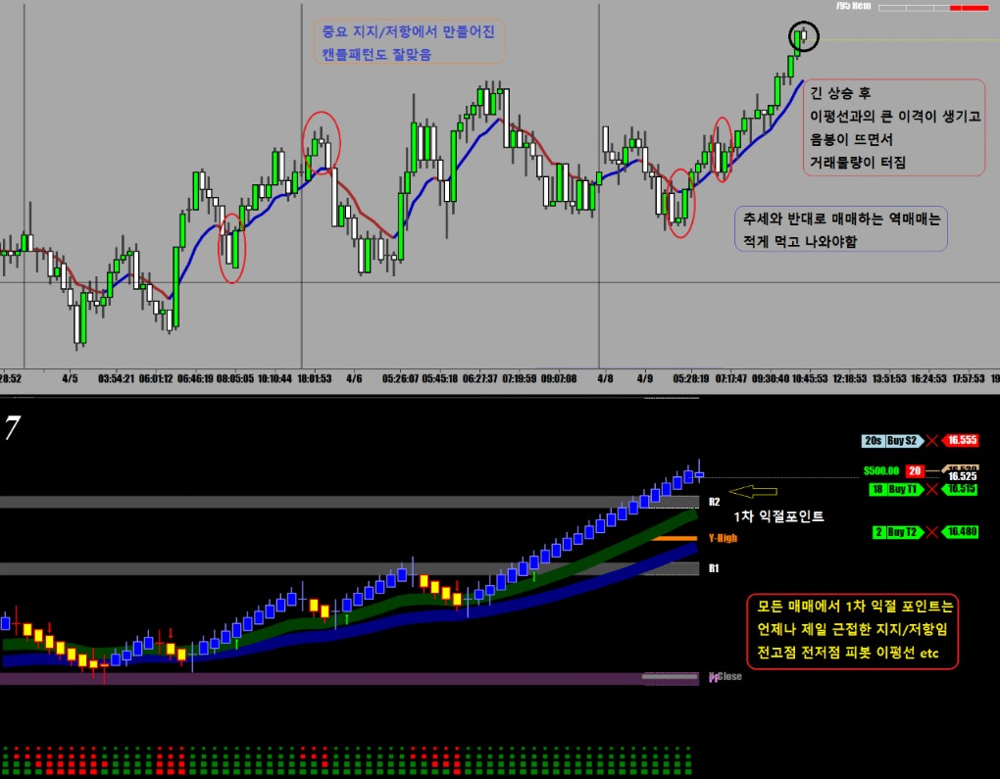
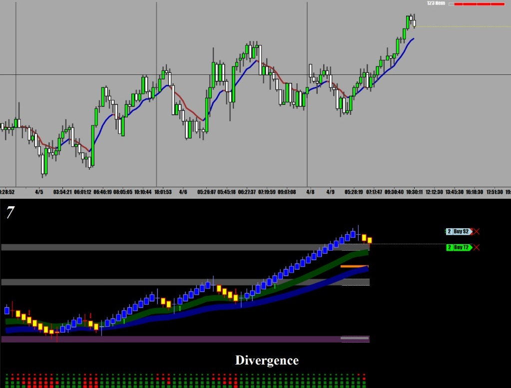
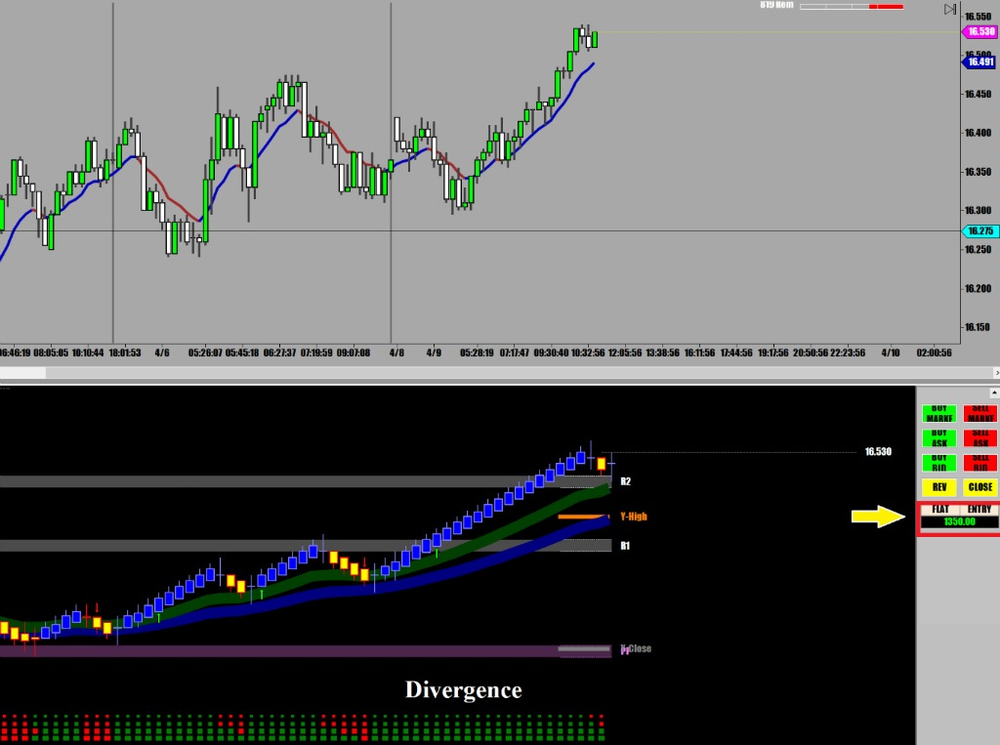

해외선물 - [SI] 실버 (Silver)
2010년부터 2012년말까지 실버는 금과 더불어 정말 돈버는 선물이었는데 어느덧 좋던 시절은 지나가고 지금은 그냥 조용히 움직이는 시골 선물이다.
보통 Precious Metal은 증시나 달러화 경제지표등에 영향을 받지만 실버는 대체로 다른 재료에 매우 둔감한 자체적으로 움직이는 변방의 선물이다.
실버를 매매할 땐 금과 움직이는 방향이 비슷해서 금차트를 같이 띄워놓고 참고로 하면서 매매하면 좋다.
금은 매매량도 많고 움직임이 커서 작은 움직임을 따라하면 안되고 현재추세같은 큰 흐름만 보면 된다
오늘은 다른일 보느라 늦게 시작해서 역매매 한 번하고 지금은 기다리는 중.
역매매는 반드시 긴 추세후에 주요 지지/저항이라든지 강력한 이평선 맞고 주춤하면서 물량 터질 때 들어가야되고 손절은 직전고점이다.
숙달되지 않았다면 가능하면 역매매는 하지 않는게 좋다.
중요한 포인트에서 만들어진 캔들패턴은(빨간 동그라미) 좋은 매매신호가 된다

1차 익절 후 뒤에 있던 손절을 오늘 매수가로 옮김
그러나 예상대로 강려크한 지지선에서 곧바로 반등 손절 걸림

오늘도 증시는 널을 뛰는 중이라 오후장에 증시 떡락할 때 좀 움직임이 있을것 같고 일단은 좀 더 지켜보다가 챤스오면 들어갈 예정이다.

실버는 금과 연동하는 경우가 많아서 금의 움직임을 참고하면서 같이 매매하면 많은 도움이 된다.
하지만 100% 같지는 않기 때문에 금이 움직인다고 무조건 따라 지르면 안된다. 참고만 해야 한다.
실버는 움직임이 예측이 가능한 범위내에서 움직이기 때문에 일봉을 보면 오늘의 방향을 어느 정도까지는 예측할 수 있다
인덱스 선물이나 크루드처럼 예측하기가 매우 어려운 선물들에 비해 그나마 매매가 수월하다.
움직임도 느려서 이거저거 따져보기 충분한 시간적 여유도 있다.
주로 미국 서부시간 5시 30분부터 큰 움직임이 만들어지기 때문에 그때부터 2시간 정도 매매하면 된다.
큰 차트의 이평선을 기준으로 위쪽에 있으면 상승으로 아래쪽에 있으면 하락으로 매매하면 되고,
장중에 중요 지지/저항에서 나타나는 캔들 패턴중에 모닝스타(아침별) 엔걸핑(장악형) 패턴은 매우 믿을만한 신호가 된다.
모든 패턴이 다 믿을만한게 아니라 반드시 중요한 지점에서 생기는 패턴만 믿어야 한다.